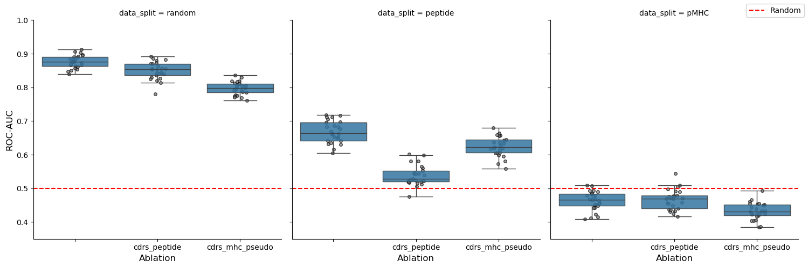
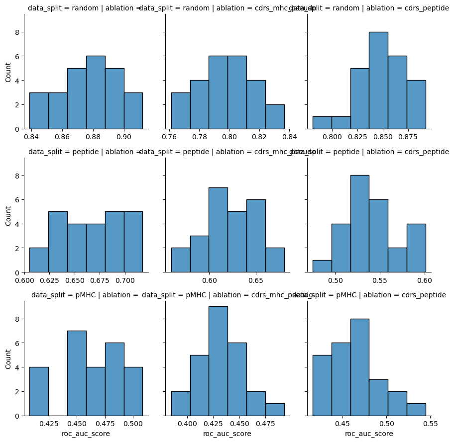

Evaluate model on data splits
In this notebook, we look at the performance of TCRStructMap on different data splitting strategies. We also look at the peptide channels and MHC pseudo sequence channels separately to note that the MHC channel can provide a shortcut for learning under some splitting strategies.
[1]:
import collections
import itertools
import IPython.display as ipy_display
import matplotlib.pyplot as plt
import numpy as np
import pandas as pd
import pingouin as pg
import seaborn as sns
from matplotlib.lines import Line2D
from scipy import stats
from sklearn.metrics import roc_auc_score
[2]:
SIGNIFICANCE_LEVEL = 0.05
[3]:
ablations = ('', 'cdrs_peptide', 'cdrs_mhc_pseudo')
data_splits = ('random', 'peptide', 'pMHC')
[4]:
predictions = []
for data_split in data_splits:
for ablation in ablations:
prediction = pd.read_csv(
f"data/processed/TCRStructMap_{ablation + '_' if ablation else ablation}predictions_on_sequences_"
f'{data_split}_split.csv'
)
prediction['data_split'] = data_split
prediction['ablation'] = ablation
sequences = pd.read_csv(f'data/interim/sequences_{data_split}_split.csv', index_col='index')
prediction = prediction.merge(sequences, how='left', left_on='index', right_index=True)
prediction = prediction[prediction['fold'] == prediction['sub_model_number']].reset_index(drop=True)
predictions.append(prediction)
predictions = pd.concat(predictions).reset_index(drop=True)
[5]:
overall_roc_auc = predictions.groupby(['data_split', 'ablation']).apply(
lambda group: roc_auc_score(group['label'], group['prediction']), include_groups=False
)
overall_roc_auc.name = 'roc_auc_score'
overall_roc_auc = overall_roc_auc.reindex(
pd.MultiIndex.from_product(
[data_splits, ablations],
names=['data_split', 'ablation'],
)
)
overall_roc_auc
[5]:
data_split ablation
random 0.876085
cdrs_peptide 0.850001
cdrs_mhc_pseudo 0.798126
peptide 0.666831
cdrs_peptide 0.528823
cdrs_mhc_pseudo 0.627522
pMHC 0.471265
cdrs_peptide 0.473188
cdrs_mhc_pseudo 0.446419
Name: roc_auc_score, dtype: float64
[6]:
NUM_SAMPLES = 25
SAMPLE_SIZE = 500
indices = predictions['index'].unique()
rng = np.random.default_rng(123)
samples_metric_scores = []
for sample_num in range(1, NUM_SAMPLES + 1):
sample_indices = rng.choice(indices, SAMPLE_SIZE)
sample = predictions[predictions['index'].isin(sample_indices)]
for (data_split, ablation), group in sample.groupby(['data_split', 'ablation'], dropna=False):
score = roc_auc_score(group['label'], group['prediction'])
samples_metric_scores.append(
{
'sample_num': sample_num,
'data_split': data_split,
'ablation': ablation,
'roc_auc_score': score,
}
)
samples_metric_scores = pd.DataFrame(samples_metric_scores)
[7]:
grid = sns.FacetGrid(samples_metric_scores, col='data_split', col_order=data_splits, sharex=False, height=5)
grid.map_dataframe(
sns.boxplot, x='ablation', y='roc_auc_score', order=ablations, showfliers=False, boxprops={'alpha': 0.85}, zorder=1
)
grid.map_dataframe(
sns.stripplot,
x='ablation',
y='roc_auc_score',
order=ablations,
color='grey',
marker='o',
size=4,
edgecolor='black',
linewidth=1,
alpha=0.70,
zorder=0,
)
grid.refline(y=0.5, color='red')
refline_handle = Line2D([0], [0], color='red', linestyle='--', label='Random')
grid.figure.legend(handles=[refline_handle], loc='upper right')
grid.set(ylim=(0.35, 1.0))
grid.set_axis_labels('Ablation', 'ROC-AUC', fontsize=12)
plt.savefig('report/figures/data_split_evaluation.svg')
plt.show()

[9]:
metric_scores_agg = pd.concat(
[
overall_roc_auc,
samples_metric_scores.groupby(['data_split', 'ablation'])['roc_auc_score']
.agg(['std'])
.sort_index(ascending=False),
],
axis=1,
)
norm_val = stats.norm.ppf(1 - SIGNIFICANCE_LEVEL / 2)
metric_scores_agg['ci'] = metric_scores_agg.apply(
lambda row, norm_val=norm_val: (
row['roc_auc_score'] - norm_val * row['std'],
row['roc_auc_score'] + norm_val * row['std'],
),
axis=1,
)
metric_scores_agg = metric_scores_agg.reindex(
pd.MultiIndex.from_product(
[data_splits, ablations],
names=['data_split', 'ablation'],
)
)
metric_scores_agg
[9]:
| roc_auc_score | std | ci | ||
|---|---|---|---|---|
| data_split | ablation | |||
| random | 0.876085 | 0.019209 | (0.8384358432460358, 0.9137340200255891) | |
| cdrs_peptide | 0.850001 | 0.025513 | (0.799997035128197, 0.900004409437784) | |
| cdrs_mhc_pseudo | 0.798126 | 0.019373 | (0.7601554808072338, 0.8360967497288349) | |
| peptide | 0.666831 | 0.032473 | (0.6031860937066418, 0.730476027153012) | |
| cdrs_peptide | 0.528823 | 0.029967 | (0.4700886585077227, 0.5875581443302175) | |
| cdrs_mhc_pseudo | 0.627522 | 0.030187 | (0.5683555142258928, 0.6866880340007887) | |
| pMHC | 0.471265 | 0.028396 | (0.4156106231659526, 0.5269193794332403) | |
| cdrs_peptide | 0.473188 | 0.030190 | (0.4140172779883049, 0.5323596448567489) | |
| cdrs_mhc_pseudo | 0.446419 | 0.025306 | (0.3968208464401598, 0.496016998504601) |
[10]:
def calculate_differences(df: pd.DataFrame) -> pd.DataFrame:
groups = list(df.groupby('ablation'))
groups = sorted(groups, key=lambda item: ablations.index(item[0]))
differences = {
'group_name_i': [],
'group_name_j': [],
'difference_roc_auc': [],
}
for i, (group_name_i, group_i) in enumerate(groups[:-1]):
for group_name_j, group_j in groups[i + 1 :]:
differences['difference_roc_auc'].append(
group_i['roc_auc_score'].iloc[0] - group_j['roc_auc_score'].iloc[0]
)
differences['group_name_i'].append(group_name_i)
differences['group_name_j'].append(group_name_j)
return pd.DataFrame(differences).set_index(['group_name_i', 'group_name_j'])
[11]:
overall_roc_auc_difference = (
overall_roc_auc.reset_index().groupby('data_split').apply(calculate_differences, include_groups=False)
)
samples_metric_scores_differences = (
samples_metric_scores.groupby(['sample_num', 'data_split'])
.apply(calculate_differences, include_groups=False)
.groupby(['data_split', 'group_name_i', 'group_name_j'])
.agg(['std'])
)
samples_metric_scores_differences.columns = ['_'.join(column) for column in samples_metric_scores_differences.columns]
metric_scores_difference = pd.concat([overall_roc_auc_difference, samples_metric_scores_differences], axis=1)
norm_value = stats.t.ppf((2 - SIGNIFICANCE_LEVEL) / 2, NUM_SAMPLES - 1)
metric_scores_difference['ci'] = metric_scores_difference.apply(
lambda row, norm_value=norm_value: (
row['difference_roc_auc'] - norm_value * row['difference_roc_auc_std'],
row['difference_roc_auc'] + norm_value * row['difference_roc_auc_std'],
),
axis=1,
)
metric_scores_difference = metric_scores_difference.sort_index(
level='data_split', key=lambda index: index.map(data_splits.index)
)
metric_scores_difference
[11]:
| difference_roc_auc | difference_roc_auc_std | ci | |||
|---|---|---|---|---|---|
| data_split | group_name_i | group_name_j | |||
| random | cdrs_mhc_pseudo | 0.077959 | 0.015854 | (0.04523773790172663, 0.11067989483382962) | |
| cdrs_peptide | 0.026084 | 0.018506 | (-0.012109536811161802, 0.06427795551680573) | ||
| cdrs_peptide | cdrs_mhc_pseudo | 0.051875 | 0.021825 | (0.0068309296144455495, 0.09691828441546678) | |
| peptide | cdrs_mhc_pseudo | 0.039309 | 0.023201 | (-0.008574354582769707, 0.08719292721574193) | |
| cdrs_peptide | 0.138008 | 0.033551 | (0.06876112702953631, 0.20725419099217723) | ||
| cdrs_peptide | cdrs_mhc_pseudo | -0.098698 | 0.028678 | (-0.15788602886921696, -0.039510716519524335) | |
| pMHC | cdrs_mhc_pseudo | 0.024846 | 0.019210 | (-0.014800697856687466, 0.0644928555111195) | |
| cdrs_peptide | -0.001923 | 0.017082 | (-0.03717836784727758, 0.033331447601416604) | ||
| cdrs_peptide | cdrs_mhc_pseudo | 0.026770 | 0.020420 | (-0.015375090302834737, 0.06891416820312773) |
[12]:
grid = sns.FacetGrid(samples_metric_scores, row='data_split', row_order=data_splits, col='ablation', sharex=False)
grid.map_dataframe(sns.histplot, x='roc_auc_score')
plt.show()

[13]:
ipy_display.display(
pg.rm_anova(samples_metric_scores, dv='roc_auc_score', within=['data_split', 'ablation'], subject='sample_num')
)
groups = list(
samples_metric_scores.set_index('sample_num').groupby(['data_split', 'ablation'], dropna=False)['roc_auc_score']
)
groups = [(group_name, group.sort_index()) for group_name, group in groups]
significance_level = 0.05 / len(groups)
results = collections.defaultdict(list)
for (group1_name, group1), (group2_name, group2) in itertools.combinations(groups, 2):
stat, p_val = stats.wilcoxon(group1, group2)
results['group1'].append(group1_name)
results['group2'].append(group2_name)
results['stat'].append(stat)
results['p_val'].append(p_val)
results['signficant'].append(p_val < significance_level)
ipy_display.display(pd.DataFrame(results))
/ceph/project/koohylab/bmcmaste/miniconda3/envs/tcr-antigen-prediction/lib/python3.11/site-packages/pingouin/distribution.py:515: UserWarning: Epsilon values might be innaccurate in two-way repeated measures design where each factor has more than 2 levels. Please double-check your results.
warnings.warn(
| Source | SS | ddof1 | ddof2 | MS | F | p-unc | p-GG-corr | ng2 | eps | |
|---|---|---|---|---|---|---|---|---|---|---|
| 0 | data_split | 5.694643 | 2 | 48 | 2.847321 | 1855.028726 | 3.553593e-46 | 5.740910e-43 | 0.972869 | 0.926785 |
| 1 | ablation | 0.129963 | 2 | 48 | 0.064981 | 178.351481 | 6.005048e-23 | 3.380594e-21 | 0.450052 | 0.915193 |
| 2 | data_split * ablation | 0.185805 | 4 | 96 | 0.046451 | 227.685247 | 4.534962e-48 | 8.507024e-22 | 0.539167 | 0.425243 |
| group1 | group2 | stat | p_val | signficant | |
|---|---|---|---|---|---|
| 0 | (pMHC, ) | (pMHC, cdrs_mhc_pseudo) | 3.0 | 2.980232e-07 | True |
| 1 | (pMHC, ) | (pMHC, cdrs_peptide) | 127.0 | 3.525196e-01 | False |
| 2 | (pMHC, ) | (peptide, ) | 0.0 | 5.960464e-08 | True |
| 3 | (pMHC, ) | (peptide, cdrs_mhc_pseudo) | 0.0 | 5.960464e-08 | True |
| 4 | (pMHC, ) | (peptide, cdrs_peptide) | 0.0 | 5.960464e-08 | True |
| 5 | (pMHC, ) | (random, ) | 0.0 | 5.960464e-08 | True |
| 6 | (pMHC, ) | (random, cdrs_mhc_pseudo) | 0.0 | 5.960464e-08 | True |
| 7 | (pMHC, ) | (random, cdrs_peptide) | 0.0 | 5.960464e-08 | True |
| 8 | (pMHC, cdrs_mhc_pseudo) | (pMHC, cdrs_peptide) | 0.0 | 5.960464e-08 | True |
| 9 | (pMHC, cdrs_mhc_pseudo) | (peptide, ) | 0.0 | 5.960464e-08 | True |
| 10 | (pMHC, cdrs_mhc_pseudo) | (peptide, cdrs_mhc_pseudo) | 0.0 | 5.960464e-08 | True |
| 11 | (pMHC, cdrs_mhc_pseudo) | (peptide, cdrs_peptide) | 0.0 | 5.960464e-08 | True |
| 12 | (pMHC, cdrs_mhc_pseudo) | (random, ) | 0.0 | 5.960464e-08 | True |
| 13 | (pMHC, cdrs_mhc_pseudo) | (random, cdrs_mhc_pseudo) | 0.0 | 5.960464e-08 | True |
| 14 | (pMHC, cdrs_mhc_pseudo) | (random, cdrs_peptide) | 0.0 | 5.960464e-08 | True |
| 15 | (pMHC, cdrs_peptide) | (peptide, ) | 0.0 | 5.960464e-08 | True |
| 16 | (pMHC, cdrs_peptide) | (peptide, cdrs_mhc_pseudo) | 0.0 | 5.960464e-08 | True |
| 17 | (pMHC, cdrs_peptide) | (peptide, cdrs_peptide) | 1.0 | 1.192093e-07 | True |
| 18 | (pMHC, cdrs_peptide) | (random, ) | 0.0 | 5.960464e-08 | True |
| 19 | (pMHC, cdrs_peptide) | (random, cdrs_mhc_pseudo) | 0.0 | 5.960464e-08 | True |
| 20 | (pMHC, cdrs_peptide) | (random, cdrs_peptide) | 0.0 | 5.960464e-08 | True |
| 21 | (peptide, ) | (peptide, cdrs_mhc_pseudo) | 0.0 | 5.960464e-08 | True |
| 22 | (peptide, ) | (peptide, cdrs_peptide) | 0.0 | 5.960464e-08 | True |
| 23 | (peptide, ) | (random, ) | 0.0 | 5.960464e-08 | True |
| 24 | (peptide, ) | (random, cdrs_mhc_pseudo) | 0.0 | 5.960464e-08 | True |
| 25 | (peptide, ) | (random, cdrs_peptide) | 0.0 | 5.960464e-08 | True |
| 26 | (peptide, cdrs_mhc_pseudo) | (peptide, cdrs_peptide) | 0.0 | 5.960464e-08 | True |
| 27 | (peptide, cdrs_mhc_pseudo) | (random, ) | 0.0 | 5.960464e-08 | True |
| 28 | (peptide, cdrs_mhc_pseudo) | (random, cdrs_mhc_pseudo) | 0.0 | 5.960464e-08 | True |
| 29 | (peptide, cdrs_mhc_pseudo) | (random, cdrs_peptide) | 0.0 | 5.960464e-08 | True |
| 30 | (peptide, cdrs_peptide) | (random, ) | 0.0 | 5.960464e-08 | True |
| 31 | (peptide, cdrs_peptide) | (random, cdrs_mhc_pseudo) | 0.0 | 5.960464e-08 | True |
| 32 | (peptide, cdrs_peptide) | (random, cdrs_peptide) | 0.0 | 5.960464e-08 | True |
| 33 | (random, ) | (random, cdrs_mhc_pseudo) | 0.0 | 5.960464e-08 | True |
| 34 | (random, ) | (random, cdrs_peptide) | 10.0 | 2.563000e-06 | True |
| 35 | (random, cdrs_mhc_pseudo) | (random, cdrs_peptide) | 0.0 | 5.960464e-08 | True |